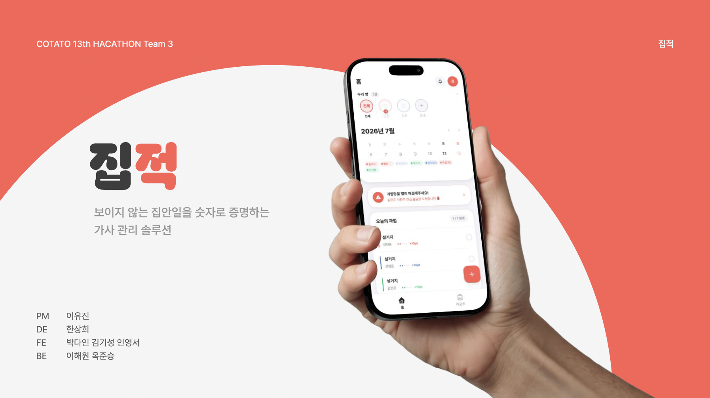
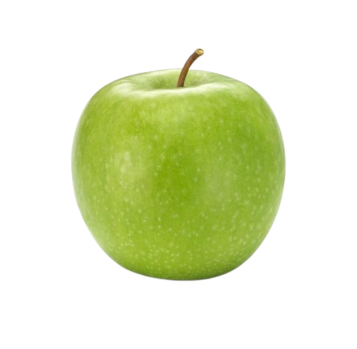

FRONTEND DEVELOPER · 2026
MAKE
IT MOVE.
사용자 경험을 관찰하고, 복잡한 문제를 명확한 인터페이스로 바꾸는 박다인입니다.

FRESH IDEAS 100%
REACT / TYPESCRIPT
READY !
READY !
WEB · APP · UISEOUL, KR ↓
DESIGN WITH PURPOSE ✦BUILD WITH CARE ✦SHIP THE IDEA ✦CRAFT WITH INTENT ✦MAKE IT CLEAR ✦MOVE WITH PURPOSE ✦DESIGN WITH PURPOSE ✦BUILD WITH CARE ✦SHIP THE IDEA ✦CRAFT WITH INTENT ✦MAKE IT CLEAR ✦MOVE WITH PURPOSE ✦
01 / ABOUT
ABOUT
ME.
기능을 만드는 데서 멈추지 않고,왜 필요한가부터 고민합니다.
React와 TypeScript를 중심으로 서비스의 흐름을 설계하고 구현합니다. 빠르게 만들되, 다시 고치기 쉬운 구조와 사용자가 이해하기 쉬운 경험을 함께 추구합니다.
ROLEFrontend Developer
FOCUSUX · Component · Web
STUDYSoftware Convergence
NOWTeam Everywhere · Intern
02 / PROJECTS
SELECTED
WORKS.
문제를 발견하고, 사용자 흐름과 코드 구조로 해결한 프로젝트입니다.
03 / ACTIVITY
THE
ROUTE.
연합 개발 동아리 COTATO · 프론트엔드 파트장 (운영진)
동아리 전체 프론트엔드 부원을 총괄하고 세션을 운영하고 있습니다.
연합 개발 동아리 COTATO · 프론트엔드 파트원
React Native 크로스플랫폼 앱 개발 스터디 팀장으로 15주 커리큘럼을 설계·운영했습니다.
프로젝트 ‘환승여행’의 팀 내 프론트엔드 파트장으로 프론트 팀원 3명을 총괄했으며,
해커톤에서 ‘집:적’ 기획 및 프론트엔드 개발을 전담했습니다.
데이터 분석 동아리 ‘DACOS’ · 운영진 (홍보팀)
교내 데이터톤 및 연합 해커톤 포스터·발표 자료 제작, 동아리 정기 행사 운영 스태프와 홍보 콘텐츠 기획·운영을 담당했으며, 동아리 정기 행사 온라인 팜플렛도 제작했습니다.
숙명여자대학교 · 소프트웨어융합전공
4학년 2학기 재학 중 · 2027년 2월 졸업 예정
04 / CONTACT
LET'S MAKE
SOMETHING MOVE.
FIND ME ONLINE.